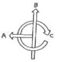
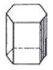
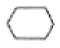
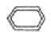
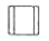
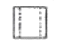
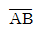
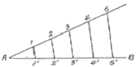
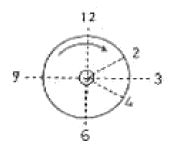

귀금속가공산업기사 (2009-07-26 기출문제)
1과목: 장신구디자인론
1. 도면의 배치를 평면도 밑에 정면도, 정면도 우측에는 우측면도를 놓았다면 몇 각법에 속하는가?
- 제1각법
- 제2각법
- 제3각법
- 제4각법
(정답률: 87%)

2. 인체의 비례를 결합시켜 창안된 조화 척도인 모듈러의 창시자는?
- 르꼬르뷔지에
- 무테지우스
- 피터 베렌스
- 르네 라리크
(정답률: 58%)
3. 다음 중 디자인의 조건에 해당되지 않는 것은?
- 합목적성
- 심미성
- 경제성
- 모방성
(정답률: 71%)
4. 제도 도면에서 반지름을 나타내는 기호는?
- ø
- □
- t
- R
(정답률: 84%)
5. 다음은 색입체의 단면도이다. A, B, C의 명칭은?

- A색상, B명도, C채도
- A채도, B명도, C색상
- A색상, B채도, C명도
- A명도, B채도, C색상
(정답률: 60%)
6. 다음 디자인 과정에서 발상, 전개, 전달, 결정단계 중 주로 전달 단계에 해당 되는 것은?
- 아이디어 유추
- 스케치
- 렌더링
- 모델링
(정답률: 58%)
7. 19C말 프랑스, 벨기에를 중심으로 시작한 조형운동으로 선이 유동적이고 자유로운 곡선과 화려한 색채에 의한 장식을 갖는 조형운동은?
- 아르누보
- 미술공계운동
- 바우하우스
- 독일공작연맹
(정답률: 71%)
8. 다음 중 난색(暖色)계통의 색만으로 모여진 것은?
- 주황, 회색, 청색
- 빨강, 노랑, 주황
- 빨강, 청록, 회색
- 녹색, 노랑, 남색
(정답률: 81%)
9. 다음 중 제도기구 사용법이 틀린 것은?
- 수평선은 좌측에서 우측으로 긋는다.
- 수직선은 아래에서 위로 긋는다.
- 빔컴퍼스는 작은 원을 그리는데 사용한다.
- 디바이더는 선의 등분이나 치수를 옮길 때 사용한다.
(정답률: 58%)
10. 마젠타의 보색은 청록으로, 시안의 보색은 주황색으로 보이는 것은?
- 심리보색
- 색상대비
- 가법혼색
- 색료혼합
(정답률: 45%)
11. 오스트발트 색상환에서 헤링의 4원색설의 보색대에 따라 분할한 4원색이 아닌 것은?
- 빨강
- 청록
- 노랑
- 보라
(정답률: 66%)
12. 가까이 보면 여러 색들이 좁은 영역을 나누고 있지만 멀리서 보면 이들이 섞여져서 하나의 색채로 보이는 혼색은?
- 가법혼색
- 동시혼색
- 계시혼색
- 병치혼색
(정답률: 65%)
13. 다음 그림과 같은 팔면체의 평면도는?





(정답률: 71%)
14. 다음 중 우아한 배색에 필요한 색은?
- 보라
- 노랑
- 검정
- 초록
(정답률: 78%)
15. 의장의 요소 중 위치, 방향, 공간, 중량감 등은 어느 요소인가?
- 개념요소
- 시각요소
- 상관요소
- 구조요소
(정답률: 41%)
16. 다음 중 명도차가 가장 적은 배색은?
- 고명도 끼리의 배색
- 고명도와 중명도와의 배색
- 고명도와 저명도와의 배색
- 중명도와 저명도와의 배색
(정답률: 68%)
17. 오금(烏金)을 만드는 방법으로 옳은 것은?
- 금-은의 2원 합금으로 금보다 은의 함유량을 많게 하여 만든다.
- 금-구리계 합금 중에서 적금을 녹청과 황산구리 용액속에 넣고 끓여 만든다.
- 구리 90~95%와 은 5~10%를 합금해서 만든다.
- 금-은-구리의 3원 합금으로 구리가 은보다 많게 하여 묽은 황산용액에 침지해서 만든다.
(정답률: 40%)
18. 그림과 같이 주어진 정직선(

)을 임의의 수로 등분하기에 응용된 기하하적 원리는?
- 평행
- 합동
- 엇각
- 대칭
(정답률: 49%)
19. 면에 대한 설명으로 틀린 것은?
- 공간에 대한 효과를 나타내는 중요한 요소이다.
- 이동하는 선의 자취가 면을 이룬다.
- 넓이는 있으나 두께는 없다.
- 면은 크기와 방향을 가지는 면의 집합이다.
(정답률: 63%)
20. 다음 중 선의 명칭에서 일정쇄선의 용도로 틀린 것은?
- 중심선
- 절단선
- 기준선
- 가상선
(정답률: 42%)
2과목: 보석재료 및 가공기법
21. 다음 중 오목 캐보션으로 가공해야 좋은 보석은?
- 안드라다이트 가닛
- 알만딘 가닛
- 스페셔타이트 가닛
- 로돌라이트 가닛
(정답률: 40%)
22. 다음 중 조각한 부분이 거들보다 낮아지게 조각하는 기법은?
- 카메오
- 조상
- 입상
- 인탈리오
(정답률: 60%)
23. 파세팅 연마기에서 80 인덱스 기어가 45°인 경우 기어의 수는?
- 8
- 10
- 12
- 15
(정답률: 39%)
24. 베르누이에 의해 제조된 최초의 합성석은?
- 다이아몬드
- 사파이어
- 루비
- 오팔
(정답률: 60%)
25. 원석 위에 표시된 타원 외의 여분을 잘라버리는 절단 작업은?
- 세 절단
- 소 절단
- 중 절단
- 대 절단
(정답률: 57%)
26. 보석감정 등의 작업에 사용하는 검사용 루페(Loupe)의 가장 일반적인 배율은?
- 5배
- 10배
- 15배
- 20배
(정답률: 71%)
27. 캐보션 연마가공 순서로 가장 좋은 것은?
- 형태잡기→세절단→그라인딩→샌딩→접착하기→광택→저면의 면처리→돕스틱분리
- 형태잡기→세절단→그라인딩→샌딩→광택→접착하기→돕스틱분리→저면의 면처리
- 형태잡기→세절단→그라인딩→접착하기→샌딩→광택→돕스틱분리→저면의 면처리
- 형태잡기→세절단→그라인딩→접착하기→광택→샌딩→저면의 면처리→돕스틱분리
(정답률: 55%)
28. 핸드피스를 핸드피스 브래킷 홈에 끼워 각도 상하 고정 나사를 움직여 연마할 수 있는 최저 ~ 최고 각도는?
- 0~75°
- 0~90°
- 25~75°
- 25~90°
(정답률: 44%)
29. 다이아몬드 콤파운드 사용에 관한 설명 중 틀린 것은?
- 경도가 높은 보석인 경우 거친 에시를 사용한다.
- 벽개가 심한 보석은 거친 에시를 사용한다.
- 규격이 작은 보석의 경우에는 거친 에시를 사용한다.
- 무색투명한 보석은 고운 에시를 사용한다.
(정답률: 58%)
30. 다음 중 구형 만들기 작업 순서로 가장 좋은 것은?
- 절단→재료선택→구형연마→그라인딩 모형→광택
- 재료선택→절단→그라인딩 모형→구형연마→광택
- 재료선택→그라인딩 모형→구형연마→절단→광택
- 절단→재료선택→그라인딩 모형→구형연마→광택
(정답률: 56%)
31. 다음 중 보석연마에 사용되지 않는 공구는?
- 소 절단기
- 템플릿
- 비중액
- 버니어캘리퍼스
(정답률: 72%)
32. 발틱해 연안에서 산출되는 호박의 설명 중 틀린 것은?
- 보통 탄소79%, 산소10.5^%, 수소10.5%로 구성되어 있다.
- 결정구조가 없는 비정질 물질이다.
- 벽개는 유기질 보석 중 가장 완벽하다.
- 보석 중에서 비중이 가장 낮은 1.⑤~1.10이다.
(정답률: 49%)
33. 유리 모조석의 특징이 아닌 것은?
- 비정질이며 규토석과 산화납이 주성분이다.
- 깨진 자국은 패각상이다.
- 굴절률은 구성 성분에 다라 1.4~1.7까지이다.
- 납 성분이 많을수록 굴절률은 낮아진다.
(정답률: 52%)
34. 다이아몬드는 보석 중 브릴리언시가 높은 보석이다. 그 이유로 옳은 것은?
- 임계각이 낮기 때문
- 굴절률이 낮기 때문
- 강도가 낮기 때문
- 투명도가 낮기 때문
(정답률: 68%)
35. 오팔의 결정학상 구조는?
- 결정질이며 결정구조가 없다.
- 비결정질이며 결정구조가 없다.
- 미정질이며 결정구조가 없다.
- 장정질이며 결정구조가 없다.
(정답률: 56%)
36. 다음 중 무기질 보석에 해당하지 않는 것은?
- 다이아몬드
- 강옥석
- 셀
- 크리소베릴
(정답률: 74%)
37. 연마를 좌우하는 직접적인 요인이 아닌 것은?
- 적절한 조명
- 적절한 비율
- 적절한 위치
- 적절한 각도
(정답률: 66%)
38. 라운드 브릴리언트형의 연마순서로 옳은 것은?
- 거들면→크라운면→퍼빌리언면→테이블면
- 걸들면→테이블면→크라운면→퍼빌리언면
- 테이블면→거들면→퍼빌리언면→크라운면
- 테이블면→크라운면→거들면→퍼빌리언면
(정답률: 48%)
39. 대 절단기의 냉각제는 보통 톱날 밑 부분의 어느 정도까지 잠기게 하는 것이 좋은가?
- 0.2~0.6cm
- 0.7~1.5cm
- 1.6~2.5cm
- 2.6~3.5cm
(정답률: 50%)
40. 빛이 결정을 통과할 때 모든 파장에 똑같이 흡수되지 않고 차별적인 흡수가 일어나, 흡수되는 파장에 따라 색이 달라지는 현상은?
- 투과성
- 다색성
- 편광성
- 차별성
(정답률: 38%)
3과목: 귀금속재료 및 가공기법
41. 바탕 금속에 미세한 모양의 홈을 내어 표면을 거칠게 만든 다음 금, 은박 판이나 금, 은사를 이용하여 문양을 입사하는 기법은?
- 포목입사
- 고육입사
- 소입사
- 절입사
(정답률: 64%)
42. 다음 금속 중 비철금속에 해당되는 것은?
- 순철(pure iron)
- 강(steel)
- 구리(copper)
- 주철(cast iron)
(정답률: 63%)
43. 백금의 비중과 용융점은? (비중/용융점)
- 12.03/1733.5℃
- 12.03/4410℃
- 21.43/1733.5℃
- 21.43/4410℃
(정답률: 58%)
44. 드릴 머신을 사용할 때 유의사항으로 틀린 것은?
- 눈이나 얼굴을 보호하기 위해 보안경을 착용한다
- 드릴, 소켓을 뽑을 때는 해머 등으로 두들기면 뽑는다.
- 드릴의 착·탈은 회전이 완전히 멈춘 다음 행한다.
- 드릴을 사용 전에 점검하고 마모나 균열이 있는 것은 사용하지 않는다.
(정답률: 80%)
45. 원심주조기 운용에 대한 안전 및 유의사항으로 틀린 것은?
- 보안경과 방열장갑을 착용한다.
- 회전팔의 무게중심 균형을 반듯이 맞추고 가동시킨다.
- 용해상태가 되면 가열온도를 높여서 급속히 용융시킨다.
- 전기로에서 플라스크를 꺼낼 때는 전원스위치를 반드시 끄고 꺼낸다.
(정답률: 63%)
46. 다음 중 은을 녹이는 왕수의 비율로 가장 좋은 것은?
- 진한 질산 : 진한 염산 = 1:3
- 진한 염산 : 진한 질산 = 1:3
- 진한 황산 : 질한 질산 = 1:3
- 진한 황산 : 진한 염산 = 1:3
(정답률: 49%)
47. 귀금속 정밀 주조용 왁스에 대한 설명 중 틀린 것은?
- 수축률이 적다.
- 상온에 방치하면 무르게 된다.
- 미정질과 비정질의 혼합물이다.
- 형틀과 잘 분리된다.
(정답률: 71%)
48. 다음 중 화이트골드(white gold) 합금에 쓰이는 금속이 아닌 것은?
- Ag
- Pd
- Ni
- Mn
(정답률: 72%)
49. 도금 전처리의 불완전에서 오는 도금결함 원인으로 틀린 것은?
- 도금이 벗겨지거나 부푼다.
- 얼룩이 생기고 광택이 균일하지 않다.
- 도금제품에 부식이 생긴다.
- 금속 표면에 내식성이 생긴다.
(정답률: 63%)
50. 칠보유약의 주성분에 황색을 얻을 수 있는 착색제는?
- 산화석
- 산화크롬
- 산화코발트
- 산화동
(정답률: 32%)
51. 팁(Tip) 끝이 작업물에 닿아 순간적으로 팁 끝이 막히거나 팁의 과열과 사용가스 압력이 부적당할 때 팁 속에 폭발음이 나면서 불꽃이 들어왔다 나갔다 하는 현상은?
- 역류
- 인화
- 역화
- 탄화
(정답률: 52%)
52. 작업현장에서 사용되는 안전표지 색채에 관한 설명으로 틀린 것은?
- 백색 – 통로, 정리정돈, 글씨(보조용)
- 녹색 – 진행, 구호, 구급, 안전
- 황색 – 비상구, 방사능, 금지
- 적색 – 방화표시, 소화전, 소화기
(정답률: 64%)
53. 땜 작업시 유의사항이 아닌 것은?
- 바탕 금속의 가열 온도가 땜의 융용 온도보다 낮아야 땜이 잘 흐른다.
- 모재가 큰 것과 적은 것을 접합할 때는 가열의 양도 비례한다.
- 한 일감에 여러 부분을 땜 할 경우 강땜, 중땜, 약땜의 순으로 한다.
- 땜은 가열 온도가 높은 쪽으로 흐르므로 접합부의 두 바탕 금속은 같은 온도로 가열해야 한다.
(정답률: 60%)
54. 다음 중 정밀주조시 매몰재를 배합할 때 가장 적절한 물의 온도는?
- 10 ~ 18℃
- 21 ~ 26℃
- 30 ~ 38℃
- 41 ~ 46℃
(정답률: 60%)
55. 금공 작업에 사용하는 모루(받침쇠)에 대한 설명 중 틀린 것은?
- 받침쇠는 보통 6가지를 1세트로 한다.
- 받침쇠는 공구강으로 제작된다.
- T자형의 크기는 200~300mm가 일반적이다.
- 크기는 대공용과 세공용으로 분류한다.
(정답률: 47%)
56. 다음 중 용융점이 가장 높은 금속은?
- Os
- lr
- Rh
- Pd
(정답률: 50%)
57. 다음 그림은 버프(Buff)로 광내기 작업을 할 때 일감을 대는 위치를 나타낸 것이다. 가장 안전하고 좋은 위치는?

- 2시 방향
- 3시 방향
- 4시 방향
- 6시 방향
(정답률: 52%)
58. 다음 중 버프 연마기에 관한 설명으로 옳은 것은?
- 귀금속 가공용 연마기는 1분간 회전수가 1500~1700 rpm이 적당하다.
- 모스린 버프는 여러 장의 천을 겹쳐 고정시킨 것으로 주로 마지막 마감 연마에 쓰인다.
- 루스 버프는 천을 여러 장 겹쳐서 재봉틀로 동심원으로 돌려 박은 것을 가장 일반적으로 사용한다.
- 펠트 버프는 나무로 만든 휠에 말털이나 인조털을 심은 솔을 표면 광택에 사용한다.
(정답률: 56%)
59. 금속의 전연성을 이용해서 금속 표면에 부조 등을 만드는 기법은?
- 타출
- 조각
- 상감
- 투조
(정답률: 52%)
60. 다음 중 황동의 합금으로 옳은 것은?
- 주석 70% + 구리 30%
- 구리 70% + 아연 30%
- 구리 50% + 주석 50%
- 구리 60% + 니켈 40%
(정답률: 62%)
4과목: 보석감별 및 감정
61. 귀금속 순도에 대하여 1894년에 제정된 영국의 홀 마크와 같이 우리나라 정부에 의해 인정된 마크가 아닌 것은?
- 금자마크
- 봉황마크
- 태극마트
- 무궁화마크
(정답률: 52%)
62. 다이아몬드의 컬러 등급에 영향을 주는 요인이 아닌 것은?
- 컬러 그레이더
- 내포물의 양과 위치
- 다이아몬드의 크기
- 거들상태
(정답률: 35%)
63. 다음 중 국제 금시장에서 주로 사용하는 중량 단위는?
- 근
- 트로이온스(Troy ounce)
- 캐럿(Karat)
- 돈
(정답률: 60%)
64. 투명도 등급에 있어서 작도의 시기로 가장 좁은 것은?
- 프로포션 측정 다음에 작도를 한다.
- 색 등급을 매긴 다음에 작도를 한다.
- 투명도 등급을 정하기 전에 작도를 한다.
- 투명도 등급 구분의 결정이 끝난 직후 작도를 한다.
(정답률: 49%)
65. 다이아몬드 가치평가의 4C에 속하지 않는 것은?
- 커트(Cut)
- 결정(Crystal)
- 색(Color)
- 투명도(Clarity)
(정답률: 65%)
66. 다음 중 라피스 라줄리에 포함되어 있지 않은 광물은?
- 허이나이트
- 라주라이트
- 소달라이트
- 튤라이트
(정답률: 45%)
67. 골드 필드에서(gold filled) 일반적으로 각인(G.F)표시가 금지되는 품위는?
- 9K 이하
- 10~15K
- 16~20K
- 21K 이상
(정답률: 67%)
68. 다음 중 합성스피넬의 특징이 아닌 것은?
- 주로 플레임 퓨전법으로 제조한다.
- 천연스피넬에 비하여 굴절률과 비중이 낮다.
- 색상은 파랑색, 청남색, 녹황색이다.
- 주로 형광반응을 강하게 한다.
(정답률: 40%)
69. 다음 중 마스터 스톤의 조건이 아닌 것은?
- 클래리티 등급은 S1 이상이면 된다.
- 퍼빌리언 깊이는 41~45% 사이어야 한다.
- 크라운 높이 비율은 12~16% 사이어야 한다.
- 마스터 스톤은 보통의 녹색을 띤 것이어야 된다.
(정답률: 60%)
70. 플럭스법으로 제조된 합성커런덤의 내포물이 아닌 것은?
- 지문상
- 위스피 베일상
- 커브선
- 육각형이나 삼각형의 금속판
(정답률: 58%)
71. 유기질 보석인 제트(Jet)에 관한 설명으로 틀린 것은?
- 단단하고 강도가 높아 흠집이 생기지 않는다.
- 색상은 흑색이며 심하게 마찰하면 전기를 띈다.
- 75%가 탄소이며 수소와 산소, 황 성분이 있다.
- 세월이 흘러도 광택이나 색상이 변하지 않는다.
(정답률: 50%)
72. 다이아몬드 작도 기호를 크라운과 퍼빌리언 모두에 그려야 하는 경우는?
- 크라운과 퍼빌리언의 양쪽에 걸쳐 있는 인클루전
- 크라운 패싯 상에 있는 모든 블레미시
- 퍼빌리언의 표면까지 달해 있는 내포물
- 퍼빌리언 패싯 상에 있는 모든 블레미시
(정답률: 56%)
73. 14K 금반지를 외국에서는 주로 어떻게 품위 표시하는가?
- 416‰
- 500‰
- 585‰
- 750‰
(정답률: 63%)
74. 다음 중 보석을 통해서 퍼빌리언 능선을 보았을 때에 강한 더블링 현상이 나타나는 것은/
- 유리
- 지르콘
- 가닛
- 야그
(정답률: 52%)
75. 다음 중 보석이 갖추어야 할 요소로 틀린 것은?
- 휴대성
- 내구성
- 아름다움
- 보편성
(정답률: 77%)
76. 다음 중 백금의 등급 분류로 틀린 것은?
- 950‰
- 900‰
- 850‰
- 550‰
(정답률: 66%)
77. 다음 중 가장 가치가 높은 다이아몬드 색은?
- 무색
- 옅은 황색
- 회색
- 갈색
(정답률: 59%)
78. 다음 중 확대 검사로 알 수 없는 것은?
- 내포물
- 단굴절, 복굴절의 결정
- 천연석과 합성석의 구별
- 광축성
(정답률: 38%)
79. 다음 중 편광기 검사 시 다른 검사와 병행하지 않아도 되는 보석은?
- 유리
- 호박
- 오팔
- 진주
(정답률: 57%)
80. 다음 유색보석 중 오팔과 함꼐 10월의 탄생석이며, 실론어의 “혼합된 보석”이라는 뜻에서 유래된 것은?
- 선스톤
- 아콰마린
- 토파즈
- 투어얼린
(정답률: 54%)